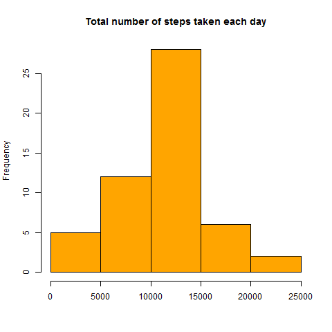
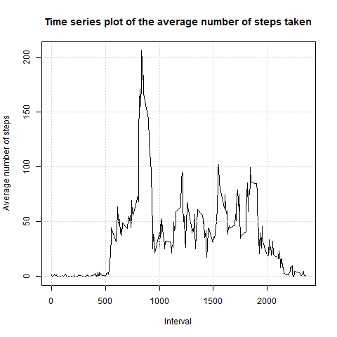
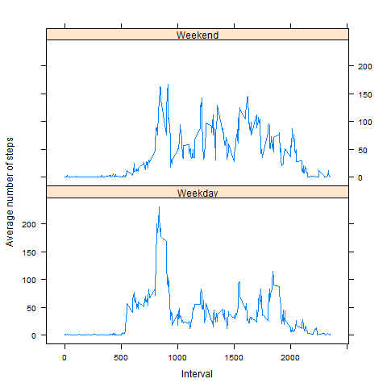

Reproducible Research: Peer Assessment 1
Loading data.
This code downloads dataset and required packages:
library(dplyr)
library(lattice)
# Reading data
url <- "https://d396qusza40orc.cloudfront.net/repdata%2Fdata%2Factivity.zip"
download.file(url, "data.zip")
data <- read.csv("activity.csv")Creating histogram of the total number of steps taken each day.
Firstly we should prepare the data. The NA values should be removed, after that data should be grouped by each day and total number of steps taken each day should be calculated.
The following code does id:
# Removing NA - values
data <- data[!is.na(data$steps), ]
# Grouping data by date, adding sum and mean of steps for each date
grouped.by.date <- group_by(data, date)
grouped.by.date <- mutate(grouped.by.date, summ = sum(steps))
grouped.by.date <- mutate(grouped.by.date, mean = mean(steps))
grouped.by.date <- unique(select(grouped.by.date, date, summ, mean))After preparing data it is become possible to create histogram of the total number of steps taken each day.
This code creates the histogram:
# Plotting histogram of total number of steps taken each day
png(filename = "figure/hist1.png")
hist(grouped.by.date$summ,
main = "Total number of steps taken each day",
xlab = "",
col = "orange")
dev.off()
Mean and median number of steps taken each day.
Mean and median number of steps taken each day are calculated by the following code:
# Calulating mean and median number of steps taken each day
mean.steps <- mean(grouped.by.date$summ)
median.steps <- median(grouped.by.date$summ)In fact, mean and median are equal: 10766.19.
Time series plot of the average number of steps taken.
This code groups data by intervals, caclulates for each interval average number of steps taken:
# Grouping data by interval, adding mean of steps for each interval
timeSeries <- group_by(data, interval)
timeSeries <- mutate(timeSeries, mean_ts = mean(steps))
timeSeries <- unique(select(timeSeries, interval, mean_ts))This code creates the plot:
# Plotting time series plot of the average number of steps taken
png(filename = "figure/plot1.png")
plot(timeSeries$interval,
timeSeries$mean_ts,
type = 'l',
main = "Time series plot of the average number of steps taken",
xlab = "Interval",
ylab = "Average number of steps")
grid()
dev.off()
This code find 5-minute interval that, on average, contains the maximum number of steps:
# Searching the 5-minute interval that, on average, contains the maximum number of steps
timeSeries[timeSeries$mean_ts == max(timeSeries$mean_ts), ]This 5-minute interval is equal to 835.
Imputing missing values.
NA values of steps will be replaced with it average number per corresponding interval. For example, value of step for each row where interval = 5 and step = NA will be replaced with average number of steps per all rows, where interval = 5.
The following code does id:
# Reading data with NA values
data <- read.csv("activity.csv")
# Contrilling if there are NA data
table(is.na(data$steps))
table(is.na(data$date))
table(is.na(data$interval))
# Grouping by intervals
data <- group_by(data, interval)
# Calculating average number per each interval
data <- mutate(data, mean = mean(steps, na.rm = TRUE))
# Replacing NA step values with average number per corresponding interval
data$steps <- ifelse(is.na(data$steps), data$mean, data$steps)As it could be seen, there are 2304 rows with step = NA. Other variables don’t have values NA.
After that, the following code creates new histogram of the total number of steps taken each day, using data with imputed missing values (instead removing it).
# Grouping data by date, adding sum and mean of steps for each date
grouped.by.date <- group_by(data, date)
grouped.by.date <- mutate(grouped.by.date, summ = sum(steps, na.rm = TRUE))
grouped.by.date <- unique(select(grouped.by.date, date, summ))
# Plotting histogram of total number of steps taken each day
png(filename = "hist2.png")
hist(grouped.by.date$summ,
main = "Total number of steps taken each day after missing values are imputed",
xlab = "",
col = "green")
dev.off()
It can be seen that histogram of the total number of steps taken each day in this case has the same shape then the same histogram with removed NA’s. The difference is that now hisogram is higher in it center.
Mean and median number of steps taken each day are calculated by the following code:
# Calulating mean and median number of steps taken each day
mean.steps.na <- mean(grouped.by.date$summ)
median.steps.na <- median(grouped.by.date$summ)New mean.na and median.na are equal between each other and equal to “old” mean and median from data without NA’s: 10766.19.
Are there differences in activity patterns between weekdays and weekends?
To find the answer to this question we will make a panel plot containing a time series plot of the 5-minute interval (x-axis) and the average number of steps taken, averaged across all weekday days or weekend days (y-axis).
This code adds data about days of weeks: is day a weekday, or weekend.
# Adding data about weekdays
Sys.setlocale("LC_TIME","English")
# Adding name of the day
data$weekday <- weekdays(as.Date(data$date))
# Adding type of the day (weekday or weekend)
data$type <- as.factor(ifelse(data$weekday == 'Saturday' | data$weekday == 'Sunday', "Weekend", "Weekday"))
# Grouping data
timeSeries <- group_by(data, interval, type)
timeSeries <- mutate(timeSeries, mean_ts = mean(steps, na.rm = TRUE))
timeSeries <- unique(select(timeSeries, type, interval, mean_ts))Now it is possible to create a panel plot containing a time series plot of the 5-minute interval (x-axis) and the average number of steps taken, averaged across all weekday days or weekend days (y-axis).
This code creates the plot:
# Plot comparing the average number of steps taken per 5-minute interval across weekdays and weekends
png(filename = "figure/plot2.png")
xyplot(mean_ts ~ interval | type, data = timeSeries, layout = c(1, 2), type = 'l',
xlab = "Interval",
ylab = "Average number of steps")
dev.off()